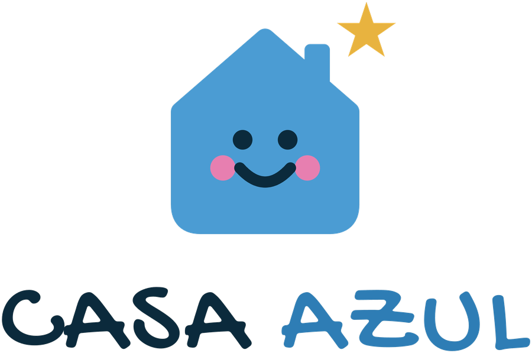
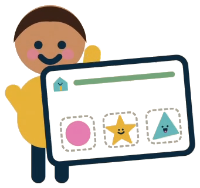
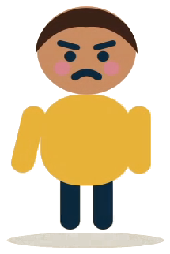
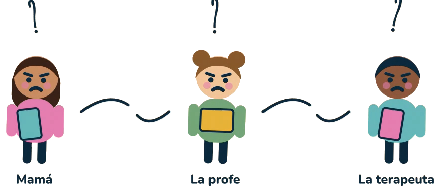
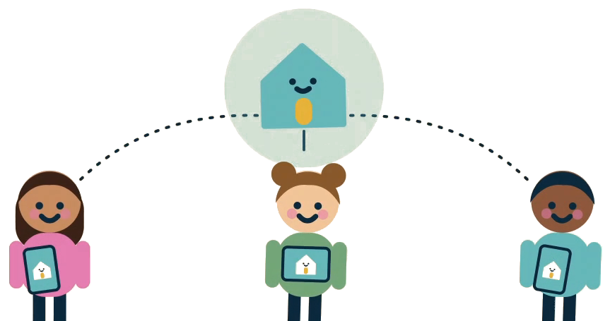
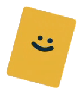
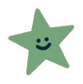

Proyecto en etapa de ideaciónUna app educativa para niños autistas de hasta 13 años que une al estudiante, su familia, sus profes y sus terapeutas en un mismo lugar. Poco tiempo de pantalla, solo para aprender y siempre con un adulto a cargo.
Toca los dibujos en el orden en que pasan cada mañana. La rutina la define la familia o el docente.

¿Qué hace Tomi primero?
Ahora cuéntale a alguien de tu familia qué haces tú primero al despertar.
La sesión se cierra con una despedida, sin botón de “jugar otra vez”.
Si el niño se equivoca, recibe una pista suave. Nada de sonidos fuertes ni colores de alarma.
Una sola instrucción a la vez, con dibujos grandes y fáciles de tocar.
Al terminar, la app se despide y propone algo para hacer fuera de la pantalla.
La familia ve cuánto tiempo se usó y cómo le fue al niño.

Pero el aula no siempre se adapta a él: mucho ruido, poco tiempo, todo igual para todos. Los niños autistas aprenden de formas distintas, y los entornos educativos casi nunca se adaptan a su manera de comunicarse, procesar información y prestar atención.

Nada conectado. Nadie sabía lo que hacía el otro. La familia usa unas herramientas en casa, la profe otras en el aula y la terapeuta las suyas. Nadie tiene la visión completa del proceso del niño.

Un mismo lugar para Tomi, su familia, sus profes y sus terapeutas. Cada persona entra con su propio rol y todos ven cómo avanza.
Juegos, talleres y actividades didácticas y de apoyo.
Un entorno académico que se adapta a la metodología, los objetivos y el sistema educativo de cada institución.
Juegos, talleres y material académico a su medida.
Supervisa, define los tiempos y recibe orientación de un asistente virtual.
Un aula extendida para adaptar contenidos y asignar actividades.
Acompañan y siguen el proceso de cada estudiante.
No queremos más pantalla. Queremos mejor pantalla.

Actividades que continúan en papel, con las manos o con la familia.
Siempre con un adulto a cargo, que decide qué contenido se usa y cuándo.Rutinas, emociones básicas, colores, formas y comunicación con apoyo visual.
Lectoescritura, matemáticas básicas y habilidades sociales.
Contenidos académicos de primaria, organización y autonomía.
La duración de cada sesión se definirá junto con terapeutas y docentes durante la validación.
Educación adaptada, inclusiva y personalizada.
Menos barreras para participar en el colegio.
Tecnología usada con responsabilidad.
Buscamos familias, docentes, colegios y centros especializados que quieran ayudarnos a validar la idea.
Síguenos en Instagram
@casaa_azull